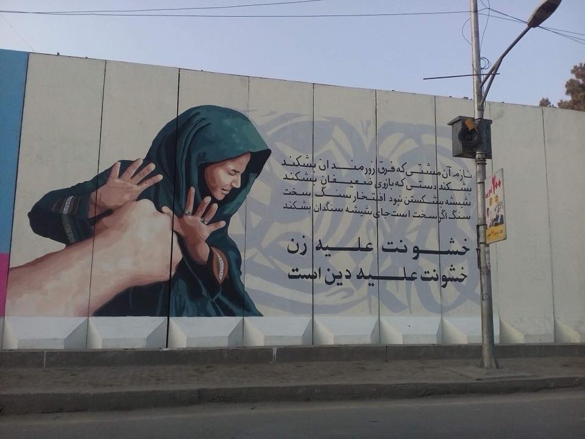
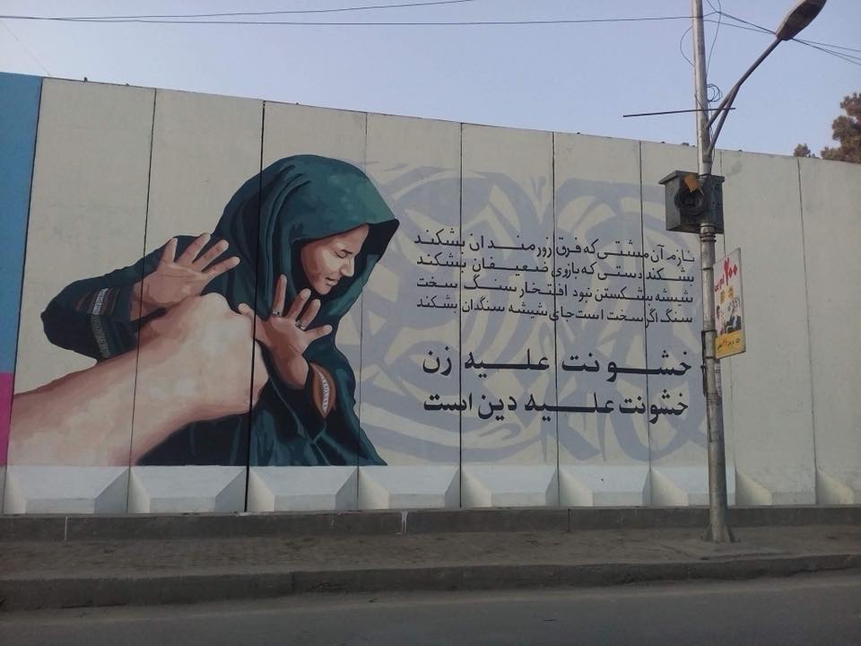

AFGHANISTAN TODAY
As the United States withdrew its remaining troops in 2021, fighting between the Taliban
and Afghan government forces intensified. An Afghan branch of the Islamic State (ISIS) also carried out attacks,
including against civilians. Hundreds of civilians have been killed and injured in insurgent attacks,
including targeted assassinations of journalists and officials.
Indiscriminate government airstrikes added to the civilian toll. Women’s rights advocates have raised concerns about shrinking space for civil society.
The Taliban have imposed severe restrictions on women’s rights and free expression in areas they control.
The Covid-19 pandemic has overwhelmed Afghanistan’s fragile health system, adding to an ongoing humanitarian crisis.
 

THE FATE OF AN AVERAGE AFGHANISTAN WOMAN TODAY
As the Taliban complete their dramatic sweep through Afghanistan, pouring into the capital they were driven out of two decades ago, women and girls are among the most vulnerable.
Afghan women have been targeted for speaking out against attacks by the Taliban or simply for holding positions of authority.
Since the start of 2021 civilian deaths have risen by almost 50 percent, with more women and children killed and wounded in Afghanistan than in the first six months of any year since records began in 2009, the UN reported in July.
The Afghan government has blamed most targeted killings on the Taliban, who deny carrying out assassinations.
As the Islamist insurgents enter the capital, many fear a disintegration of women’s rights, with the Taliban overturning the freedoms gained during the 20 years since US-led forces helped oversee the country’s transition to democracy.
"The Taliban will regress freedom at all levels and that is what we are fighting against," an Afghan government spokesperson told Reuters on August 13.
"Women and children are suffering the most and our forces are trying to save democracy. The world should understand and help us."
'Our world collapses'
As the capital city falls into the hands of Islamist insurgents, those pleas for help may be too late. Numerous reports have emerged of the Taliban going door-to-door, drafting lists of women and girls aged between 12 and 45 years who are then forced to marry Islamist fighters.
Women are being told they cannot leave home without a male escort, can no longer work or study or freely choose the clothes they want to wear. Schools, too, are being closed.